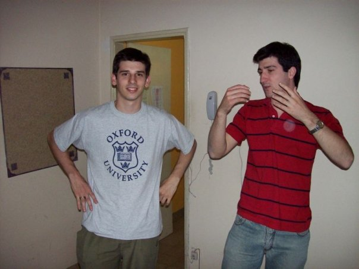

La prueba del dulce de leche (un cuento regalo de cumpleaños para mi amigo Ale)
Era otoño de 2003 o 2004. Estábamos en la cocina del departamento estudiando Análisis Matemático 1 cuando Ale propuso hacer un corte. Levantamos los apuntes y pusimos un mantel a cuadros rojo. De la heladera sacamos manteca y un tarro de dulce de leche. Yo puse la pava para preparar café y le dije a uno de los otros que busque el pan en la bolsa de tela que colgaba de la pared.
Los otros eran el Chapa, el Chami y Dimitri. Ellos y Ale estudiaban Ingeniería Industrial. Yo estudiaba Ingeniería en Sistemas, pero preparaba con ellos algunas materias comunes.
El Chapa debía su apodo a la imposibilidad de que el resto de los habitantes del mundo universitario, alumnos, docentes y no docentes, pronuncien su apellido: Schlapbach.
Del Chami no estoy seguro de recordar bien su apodo, así que a falta de uno mejor, voy a usar ese en este relato. Lo único que recuerdo del Chami eran sus brazos peludos. Un par de ramas con frondosa vegetación. Pelos negros y duros. Era como si tuviera cejas en los brazos.
Algo parecido me pasa con Dimitri. No estoy seguro si ese era su nombre. Recuerdo sí, que tenía un nombre imponente, con fuerza, un nombre que no era común en personas de nuestra edad. Bien podría haberse llamado Tritón o algo por el estilo. No recuerdo. Solo recuerdo que tenía una melena de rulos que le llegaban a la mitad de la espalda.
Repasando entonces, los personajes de la historia somos: Ale y yo, compartiendo un departamento de estudiantes, alguien con un apellido raro, alguien con brazos peludos y alguien con rulos hasta la espalda.
Ale, el Chapa, el Chami, Dimitri y yo, luego de haber estado haciendo ejercicios de derivadas e integrales por unas tres horas decidimos hacer un corte para merendar.
Los cuchillos sobrevolaban el mantel como pequeños aeroplanos bimotores y todos hablábamos a la vez.
---Pasame el cuchillo.
---No ese no, el de untar.
---Alcanzame la manteca.
---Cortame una rodaja.
---Dulce de leche, por favor.
---¿Toman con leche el café?
---Yo sin nada, ni azúcar.
En un momento dado solo se escuchaban los maxilares trabajar. La armoniosa melodía fue interrumpida con un anuncio:
---Voy al baño ---dijo el Chami.
Unos minutos más tarde, lo volvimos a escuchar.
Su voz era como de ultratumba, porque venía del baño, escalaba la puerta entreabierta, atravesaba el pasillo, doblaba hacia la cocina y nos llegaba ya bastante amortiguada:
---¡No hay papel!
Ale, sin dejar de atender al pan con manteca y dulce de leche que estaba preparando le contestó de forma automática:
---Usá el bidet.
El Chami hizo como que no escuchaba y volvió a pedir:
---¡Traiganme papel, que se terminó!
Entonces yo, que conocía esa sensación de impotencia, ese estar parado con las piernas tan separadas como permite el pantalón bajo, las rodillas algo flexionadas, sosteniendo la levedad del ser con una mano en el picaporte del lado de adentro, yo, que había estado ahí, me levanté y le busqué un rollo.
Cuando el Chami volvió a la mesa, había cierto desconcierto en sus ojos. Interrogación.
---¿Vos usás bidet, Ale?
---Sí, es lo mejor que hay. Mucho más higiénico que andar limpiándose con un pedazo de papel.
---Pero… pero… el bidet lo usan las minas… ---balbuceó.
---Yo no soy mina y lo uso ---contestó Ale, serio.
Parecía que la diferencia estaba saldada, pero el Chami seguía incrédulo.
Se planteó entonces ahí, en el medio de la cocina, con las rodajas de pan untadas como mudos testigos, una batalla intelectual. Se encontraban dos escuelas. La escuela del papel higiénico y la escuela del bidet.
El Chami y Ale empezaron a discutir, dando cada uno sus argumentos. Gritaban, gesticulaban.
Que el chorro limpia mejor, decía uno.
Que el chorro limpia de más, replicaba el otro.
Que el papel raspa, decía uno.
Porque el papel que usas vos es berreta, decía el otro.
Cuando intentaron hacernos partícipes, el Chapa, Dimitri y yo, miramos para otro lado y no nos dimos por aludidos. No teníamos una posición tan firme en la materia.
Los dos oponentes seguía exponiendo sus argumentos y en un momento dejaron de presentar ideas probadas para ponerse a teorizar sobre el asunto.
Que la cantidad de papel gastado y la ecología.
Que los litros de agua desperdiciados y el papel reciclado.
Que el calentamiento global.
Que la extinción del pez rana.
El café que quedaba en las tazas ya se había enfriado y parecía que el enfrentamiento no tendría fin. Pero algo pasó.
De repente, sorprendiéndonos a todos con una jugada definitiva, Ale le untó dulce de leche con un cuchillo en el brazo al Chami, arrancó una hoja de su cuaderno y le gritó:
---¡Tomá, dale, sacate el dulce de leche con este papel!
 Ale y Juanjo en los años de universidad
Comentarios
Comments powered by Disqus